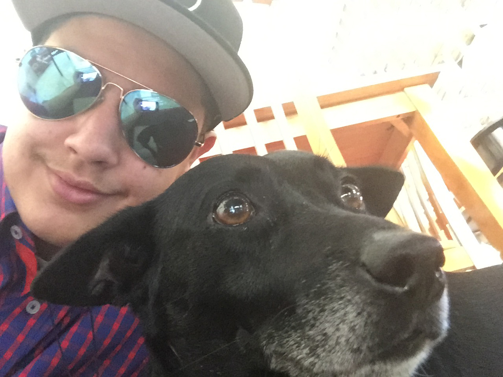
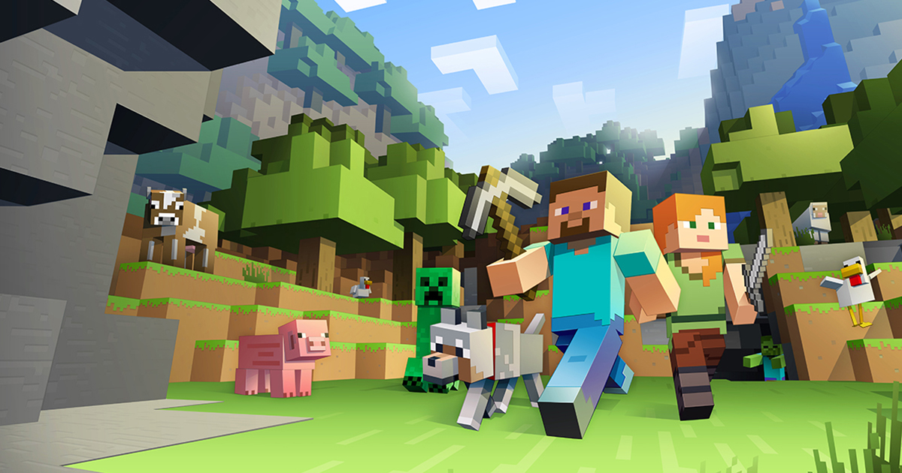

Francisco M. Diaz
The Beginning
Now the story of myself. I was born and raised in the beautiful Caribbean island of Puerto Rico on September 29, 1998. I only spent half of my life growing up there, as my family later moved to Florida in 2005. In my early years I was like other kids, innocent and carefree, and also obsessed with toys. But I also found myself getting an interests on computers, as I would play games and look at random files on my parent's computer. It was at this time that I was also introduced to the incredible world of video games, as I received a Game Boy Advanced SP for Christmas when I was either 3 or 4. I wasn't really into game design or coding during this time, as I wasn't aware of it's existance. Fast forward now to 2013-2014, years after I moved to Florida, and I was in my first few years at University High School in Orlando. I had been playing video games for a long while now, but it was during this time that I would try out a game that forever changed my life. I was introduced to the hit open world sandbox survival game Minecraft. After I got my hands on it, I was completely amazed at how the game was designed. I soon realized that my true destiny in life is to make games.
Me with my dog.
Working to Succeed
During my my junior and senior years in high school, I realized that if I wanted to do game design in the future, I should start finding some way to learn some experience with coding. That's when I decided to take a web and digital design classes. This is where I started learning everything about HTML and CSS coding and how websites are made. In the beginning I mostly made websites using just Notepad, but then I was taught to use the more advanced Adobe Dreamweaver. The sites I made were mostly pre-rendered sites that needed to be fixed as shown in the instructions. I rarely ever made my own website design. After all of this, I eventually graduated from high school and was accepted to be a student at Valencia College East Campus, where I'm currently seeking a major in Graphics and Interactive design, but I might change this to either Fine Arts or Digital Media, since what I want to do is something related to creating video games. So far I have been enjoying my time at Valencia, and I have been having a great time in Professor Kern's Web Essentials class, and I'm happy that I got to know more about web design and how I got to use the more simpler and easier text editor, Brackets.
Minecraft is one of my biggest inspirations for game design.
More about me
Here's a little list detailing all the little things about myself:
- I suffer from ADHD, Aspergers, OCD, Generalyzed anxiety, and hyperactivity. But just because I have these disabilities doesn't mean I can't do anything in life, as I believe I can be successful in anything.
- I consider myself a geek, as I love pop culture like video games, movies, tv, comics, books, music, and the internet.
- My biggest role models for my career in game design are famous game developers such as Markuss "Notch" Persson, Gabe Newell, Shigeru Miyamoto, John Carmack, John Romero, Hideo Kojima, Saturo Iwata, Toru Iwatani, Robin Walker, Masahiro Sakurai, Jeff Kaplan, Yuji Naka, and Keiji Inafune.
- I am a huge dog lover. Dogs are just one of the most awesome creatures to have ever been put on this planet, and are truly man's best friend.
- I am a lefty. I'm pretty much the only one in my family who is lefty.
- I love to eat. I especially love to eat anything that's meat. I also have a sweet tooth, cause I love candy and sweets.
- I have an unhealthy addiction to dank memes. Help me.
Bonus!
My Top 10 favorite Video Games!
To make this site more entertaining, I have to decided to include a list of my top 10 favorite video games. Let's go!
- Minecraft
- Half-Life 1 and it's expansion packs
- Team Fortress 2
- Super Mario 3D World
- Sonic The Hedgehog 2
- The Ultimate Doom
- Pac-Man
- Super Mario 64 DS
- Angry Birds 2
- LittleBigPlanet 2
Favorite Sites
I have decided to include my two favorite sites dedicated to video game design. I use these sites to learn more about the proccess of creating the perfect game and what is sometimes left unused.